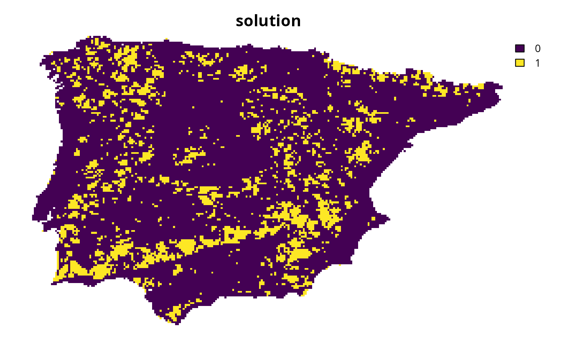

Specify targets based on the methodology outlined by
Ward et al. (2025).
Briefly, this method involves setting targets based the criteria
for recognizing Critically Endangered species by the International Union for
the Conservation of Nature (IUCN) Red List of Threatened Species (IUCN 2025).
To help prevent widespread features from obscuring priorities,
targets are capped following Butchart et al. (2015).
This method was designed for species protection at national-scales.
Note that this function is designed to be used with add_auto_targets()
and add_group_targets().
Arguments
- status
charactervalue denoting the IUCN Red List threat status used for target setting. Available options include"CR"(Critically Endangered) ,"EN"(Endangered), and"VU"(Vulnerable). Defaults to"CR".- cap_area_target
numericvalue denoting the area-based target cap. To avoid setting a target cap, a missing (NA) value can be specified. Defaults to 1000000 (i.e., 1,000,000 km2).- area_units
charactervalue denoting the unit of measurement for the area-based arguments. Defaults to"km^2"(i.e., km2).
Value
An object (TargetMethod) for specifying targets that
can be used with add_auto_targets() and add_group_targets()
to update the targets for a problem().
Details
This target setting method was designed to protect species in a national-scale prioritizations (Ward et al. 2025). Since it was designed for national-scale prioritizations, it may fail to identify meaningful priorities for prioritizations conducted at smaller geographic scales (e.g., national, state-level or county scales). For example, if this method is applied to smaller geographic scales, then the resulting prioritizations may select an overly large percentage of the study area, or be biased towards over-representing common and widespread species. As such, if you are working at smaller scales, it is recommended to set thresholds based on that criteria are appropriate to the spatial extent of the planning region. Please note that this function is provided as convenient method to set targets for problems with a single management zone, and cannot be used for those with multiple management zones.
Mathematical formulation
This method involves setting target thresholds based on assessment
criteria from the IUCN Red List (IUCN 2025).
It is based on the rationale that protected areas prevent
the local extinction of populations located inside them,
and so a protected area system can safeguard enough of a species'
distribution to ensure that the species
– in event that it becomes locally extinct outside of protected
areas – would, at worst, be classified under a particular threat status.
In particular, this method considers criteria related to
the size of a species' spatial distribution (i.e., Criterion B)
and population size reduction (i.e., Criterion A).
By default, it considers criteria for the Critically Endangered threat status
and involves setting the target threshold for a species
as 100,000
km2 (per subcriterion B1)
or 20% (per subcriterion A2) of its spatial distribution
(which ever value is larger).
Additionally, following Butchart et al. (2015), a cap of 1,000,000
km2 is applied to target
thresholds (per cap_area_threshold and area_units).
By helping to ensure that species would – at a minimum – meet criteria
for being recognized as Critically Endangered, this method aims to reduce
chance that species will become extinct.
Data calculations
This function involves calculating targets based on the spatial extent
of the features in x.
Although it can be readily applied to problem() objects that
have the feature data provided as a terra::rast() object,
you will need to specify the spatial units for the features
when initializing the problem() objects if the feature data
are provided in a different format. In particular, if the feature
data are provided as a data.frame or character vector,
then you will need to specify an argument to feature_units when
using the problem() function.
See the Examples section of the documentation for add_auto_targets()
for a demonstration of specifying the spatial units for features.
References
Butchart SHM, Clarke M, Smith RJ, Sykes RE, Scharlemann JPW, Harfoot M, Buchanan GM, Angulo A, Balmford A, Bertzky B, Brooks TM, Carpenter KE, Comeros‐Raynal MT, Cornell J, Ficetola GF, Fishpool LDC, Fuller RA, Geldmann J, Harwell H, Hilton‐Taylor C, Hoffmann M, Joolia A, Joppa L, Kingston N, May I, Milam A, Polidoro B, Ralph G, Richman N, Rondinini C, Segan DB, Skolnik B, Spalding MD, Stuart SN, Symes A, Taylor J, Visconti P, Watson JEM, Wood L, Burgess ND (2015) Shortfalls and solutions for meeting national and global conservation area targets. Conservation Letters, 8: 329–337.
IUCN (2025) The IUCN Red List of Threatened Species. Version 2025-1. Available at https://www.iucnredlist.org. Accessed on 23 July 2025.
Ward M, Possingham HP, Wintle BA, Woinarski JCZ, Marsh JR, Chapple DG, Lintermans M, Scheele BC, Whiterod NS, Hoskin CJ, Aska B, Yong C, Tulloch A, Stewart R, Watson JEM (2025) The estimated cost of preventing extinction and progressing recovery for Australia's priority threatened species. Proceedings of the National Academy of Sciences, 122: e2414985122.
See also
Other target setting methods:
spec_absolute_targets(),
spec_area_targets(),
spec_duran_targets(),
spec_interp_absolute_targets(),
spec_interp_area_targets(),
spec_jung_targets(),
spec_max_targets(),
spec_min_targets(),
spec_polak_targets(),
spec_pop_size_targets(),
spec_relative_targets(),
spec_rl_ecosystem_targets(),
spec_rl_species_targets(),
spec_rodrigues_targets(),
spec_rule_targets(),
spec_watson_targets(),
spec_wilson_targets()
Examples
# \dontrun{
# set seed for reproducibility
set.seed(500)
# load data
sim_complex_pu_raster <- get_sim_complex_pu_raster()
sim_complex_features <- get_sim_complex_features()
# create problem with Ward et al. (2025) targets
p1 <-
problem(sim_complex_pu_raster, sim_complex_features) %>%
add_min_set_objective() %>%
add_auto_targets(method = spec_ward_targets()) %>%
add_binary_decisions() %>%
add_default_solver(verbose = FALSE)
# solve problem
s1 <- solve(p1)
# plot solution
plot(s1, main = "solution", axes = FALSE)

# }